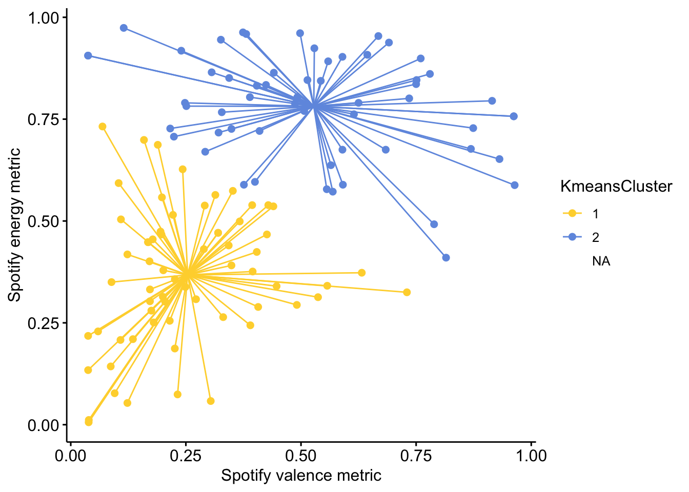

Last updated: 2019-10-02
Checks: 6 1
Knit directory: MusicEmoRegInRumination/
This reproducible R Markdown analysis was created with workflowr (version 1.4.0). The Checks tab describes the reproducibility checks that were applied when the results were created. The Past versions tab lists the development history.
The R Markdown file has unstaged changes. To know which version of the R Markdown file created these results, you’ll want to first commit it to the Git repo. If you’re still working on the analysis, you can ignore this warning. When you’re finished, you can run wflow_publish to commit the R Markdown file and build the HTML.
Great job! The global environment was empty. Objects defined in the global environment can affect the analysis in your R Markdown file in unknown ways. For reproduciblity it’s best to always run the code in an empty environment.
The command set.seed(20190920) was run prior to running the code in the R Markdown file. Setting a seed ensures that any results that rely on randomness, e.g. subsampling or permutations, are reproducible.
Great job! Recording the operating system, R version, and package versions is critical for reproducibility.
Nice! There were no cached chunks for this analysis, so you can be confident that you successfully produced the results during this run.
Great job! Using relative paths to the files within your workflowr project makes it easier to run your code on other machines.
Great! You are using Git for version control. Tracking code development and connecting the code version to the results is critical for reproducibility. The version displayed above was the version of the Git repository at the time these results were generated.
Note that you need to be careful to ensure that all relevant files for the analysis have been committed to Git prior to generating the results (you can use wflow_publish or wflow_git_commit). workflowr only checks the R Markdown file, but you know if there are other scripts or data files that it depends on. Below is the status of the Git repository when the results were generated:
Ignored files:
Ignored: .DS_Store
Ignored: .Rhistory
Ignored: .Rproj.user/
Ignored: analysis/StudyOneModelExplore_cache/
Untracked files:
Untracked: analysis/StudyOneModelExplore.Rmd
Untracked: analysis/StudyOneMusicExplore.Rmd
Untracked: data/DingelSharmanLarwood2019_Sadness_Experiement_Data/
Untracked: data/s1long.csv
Untracked: data/s2MechCoding.csv
Untracked: docs/figure/StudyOneModelExplore.Rmd/
Untracked: docs/figure/StudyOneMusicExplore.Rmd/
Untracked: docs/s1correlations.doc
Unstaged changes:
Modified: analysis/StudyOneConfirm.Rmd
Deleted: analysis/StudyOneExplore.Rmd
Deleted: analysis/StudyThreeConfirm.Rmd
Deleted: analysis/StudyThreeExplore.Rmd
Modified: analysis/StudyTwoConfirm.Rmd
Modified: analysis/StudyTwoExplore.Rmd
Modified: analysis/StudyTwoMusicExplore.Rmd
Modified: data/s1.csv
Modified: data/s1Processed.csv
Modified: data/s2.csv
Modified: data/s2Processed.csv
Deleted: data/s2long.csv
Deleted: data/s3.csv
Deleted: data/s3Processed.csv
Note that any generated files, e.g. HTML, png, CSS, etc., are not included in this status report because it is ok for generated content to have uncommitted changes.
These are the previous versions of the R Markdown and HTML files. If you’ve configured a remote Git repository (see ?wflow_git_remote), click on the hyperlinks in the table below to view them.
| File | Version | Author | Date | Message |
|---|---|---|---|---|
| Rmd | 00d5ce0 | Joel Larwood | 2019-10-01 | cluster analysis and chi-square s2 |
| html | 00d5ce0 | Joel Larwood | 2019-10-01 | cluster analysis and chi-square s2 |
| Rmd | 78fb1ef | Joel Larwood | 2019-09-30 | cluster analysis |
| Rmd | 0b89245 | Joel Larwood | 2019-09-25 | study 3 exploration plots, update earlier spotify plots |
| html | 0b89245 | Joel Larwood | 2019-09-25 | study 3 exploration plots, update earlier spotify plots |
| Rmd | ec77545 | Joel Larwood | 2019-09-25 | begin s3 |
| html | 1eec503 | Joel Larwood | 2019-09-25 | Build site. |
| html | d153258 | Joel Larwood | 2019-09-25 | Build site. |
| html | 2e25e9c | Joel Larwood | 2019-09-25 | Build site. |
| Rmd | dedd590 | Joel Larwood | 2019-09-25 | Publish to study 2 explore |
| Rmd | a80c083 | Joel Larwood | 2019-09-24 | continued exploratory analyses |
| Rmd | cd4829d | Joel Larwood | 2019-09-23 | build control model |
| html | cd4829d | Joel Larwood | 2019-09-23 | build control model |
library(tidyverse)
s2explore <- read_csv("data/s2Processed.csv") %>%
mutate(rumsplit = if_else(.$rumination < median(rumination, na.rm = TRUE),
"Low", "High")) %>%
rowid_to_column("id") %>%
add_column(JL_Mech = NA, DV_Mech = NA) %>%
select(id, track_name, artist_name, track_uri, SadSong, SadSongWhy, contains("MECH"), valence, energy, rumination:depression, rumsplit)
write_csv(s2explore, "data/s2MechCoding.csv")library(corrplot)
corrplot::corrplot(corr = cor(dplyr::select(s2explore,
rumination, strategies, ders, mesi, depression, energy, valence), use = "pairwise.complete.obs"),
method = "number",
type = "lower",
p.mat = cor.mtest((dplyr::select(s2explore,
rumination, strategies, ders, mesi, depression, energy, valence)))$p,
pch.cex = .3,
tl.srt = 0)From this we can see that trait use of music is not related to any variables in the data frame. Not is the charactertsitic of the song.
ggpubr::ggscatterhist(s2explore,
x = "valence",
y = "energy",
palette = "simpsons",
color = "rumsplit",
fill = "rumsplit",
size = 3,
legend = "right",
xlab = "Spotify valence metric",
ylab = "Spotify energy metric",
margin.params = list(fill = "rumsplit"),
legend.title = "Rumination \nScore",
xlim = c(0, 1),
ylim = c(0, 1),
caption = "Note: Margins represent desnity plots of axis",
title = "Valence and Energy metrics of identified songs",
subtitle = "A song you listen to when you are sad",
margin.plot.size = 1
)Warning: Removed 43 rows containing missing values (geom_point).Warning: Removed 43 rows containing non-finite values (stat_density).Warning: Removed 43 rows containing missing values (geom_point).Warning: Removed 43 rows containing non-finite values (stat_density).here we can see there is lots of variability in what people choose. The qualtiative repsonses may provide extra information here allowing for a clustering analysis. We could also look at adding lyrics as additional information.
library(factoextra)
library(NbClust)
s2ClusterVars <- s2explore %>% select(valence, energy, id) %>% drop_na()
factoextra::fviz_nbclust(NbClust(select(s2ClusterVars, -id), distance = "euclidean", method = "kmeans")) + theme_minimal() + ggtitle("NbClust's optimal number of clusters")*** : The Hubert index is a graphical method of determining the number of clusters.
In the plot of Hubert index, we seek a significant knee that corresponds to a
significant increase of the value of the measure i.e the significant peak in Hubert
index second differences plot.
*** : The D index is a graphical method of determining the number of clusters.
In the plot of D index, we seek a significant knee (the significant peak in Dindex
second differences plot) that corresponds to a significant increase of the value of
the measure.
*******************************************************************
* Among all indices:
* 7 proposed 2 as the best number of clusters
* 6 proposed 3 as the best number of clusters
* 1 proposed 4 as the best number of clusters
* 1 proposed 5 as the best number of clusters
* 1 proposed 8 as the best number of clusters
* 5 proposed 12 as the best number of clusters
* 2 proposed 15 as the best number of clusters
***** Conclusion *****
* According to the majority rule, the best number of clusters is 2
*******************************************************************
Among all indices:
===================
* 2 proposed 0 as the best number of clusters
* 1 proposed 1 as the best number of clusters
* 7 proposed 2 as the best number of clusters
* 6 proposed 3 as the best number of clusters
* 1 proposed 4 as the best number of clusters
* 1 proposed 5 as the best number of clusters
* 1 proposed 8 as the best number of clusters
* 5 proposed 12 as the best number of clusters
* 2 proposed 15 as the best number of clusters
Conclusion
=========================
* According to the majority rule, the best number of clusters is 2 .s2clusters <- s2ClusterVars %>%
mutate(KmeansCluster = fct_recode(factor(kmeans(select(s2ClusterVars, -id), 2)$cluster)))
ggpubr::ggscatter(s2clusters,
x = "valence",
y = "energy",
color = "KmeansCluster",
star.plot = TRUE,
palette = "simpsons",
legend = "right",
xlab = "Spotify valence metric",
ylab = "Spotify energy metric") +
scale_y_continuous(breaks = c(0, .25, .5, .75, 1)) +
scale_x_continuous(breaks =c(0, .25, .5, .75, 1)
)
sessionInfo()R version 3.6.1 (2019-07-05)
Platform: x86_64-apple-darwin15.6.0 (64-bit)
Running under: macOS Mojave 10.14.6
Matrix products: default
BLAS: /Library/Frameworks/R.framework/Versions/3.6/Resources/lib/libRblas.0.dylib
LAPACK: /Library/Frameworks/R.framework/Versions/3.6/Resources/lib/libRlapack.dylib
locale:
[1] en_AU.UTF-8/en_AU.UTF-8/en_AU.UTF-8/C/en_AU.UTF-8/en_AU.UTF-8
attached base packages:
[1] stats graphics grDevices utils datasets methods base
other attached packages:
[1] NbClust_3.0 factoextra_1.0.5 corrplot_0.84 forcats_0.4.0
[5] stringr_1.4.0 dplyr_0.8.3 purrr_0.3.2 readr_1.3.1
[9] tidyr_0.8.3 tibble_2.1.3 ggplot2_3.2.0 tidyverse_1.2.1
loaded via a namespace (and not attached):
[1] tidyselect_0.2.5 xfun_0.9 haven_2.1.1 lattice_0.20-38
[5] colorspace_1.4-1 generics_0.0.2 vctrs_0.2.0 htmltools_0.3.6
[9] yaml_2.2.0 rlang_0.4.0 pillar_1.4.2 ggpubr_0.2.3
[13] glue_1.3.1 withr_2.1.2 modelr_0.1.4 readxl_1.3.1
[17] munsell_0.5.0 ggsignif_0.6.0 gtable_0.3.0 workflowr_1.4.0
[21] cellranger_1.1.0 ggsci_2.9 rvest_0.3.4 evaluate_0.14
[25] labeling_0.3 knitr_1.24 broom_0.5.2 Rcpp_1.0.2
[29] scales_1.0.0 backports_1.1.4 jsonlite_1.6 fs_1.3.1
[33] hms_0.5.0 digest_0.6.20 stringi_1.4.3 ggrepel_0.8.1
[37] cowplot_1.0.0 grid_3.6.1 rprojroot_1.3-2 cli_1.1.0
[41] tools_3.6.1 magrittr_1.5 lazyeval_0.2.2 crayon_1.3.4
[45] whisker_0.3-2 pkgconfig_2.0.2 zeallot_0.1.0 xml2_1.2.1
[49] lubridate_1.7.4 assertthat_0.2.1 rmarkdown_1.14 httr_1.4.1
[53] rstudioapi_0.10 R6_2.4.0 nlme_3.1-140 git2r_0.26.1
[57] compiler_3.6.1